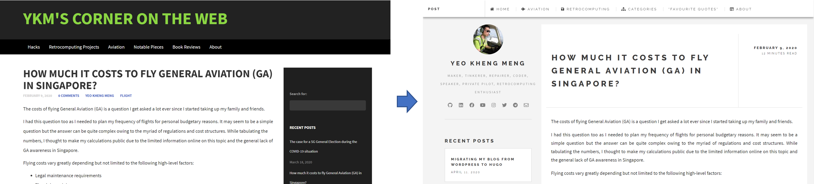
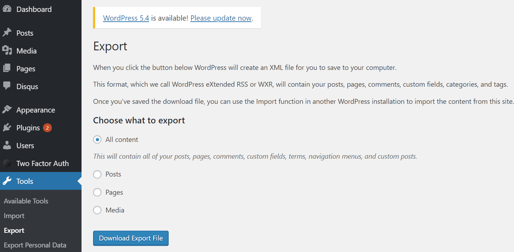
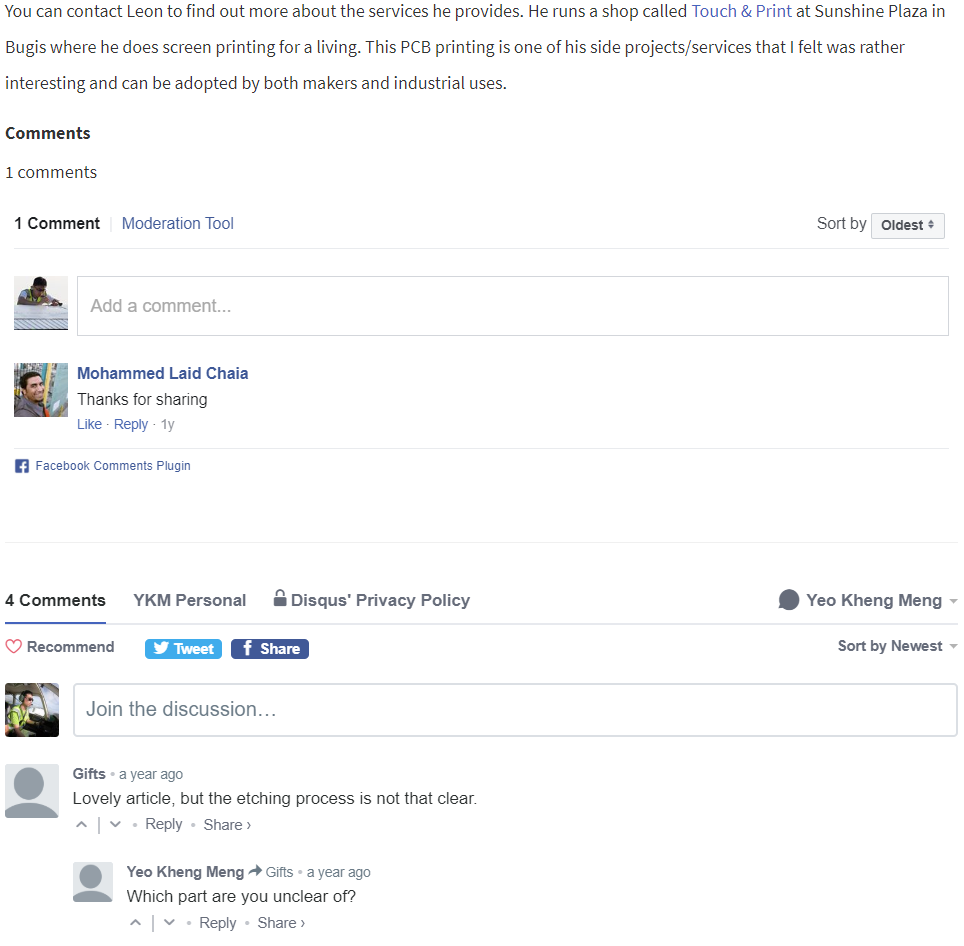
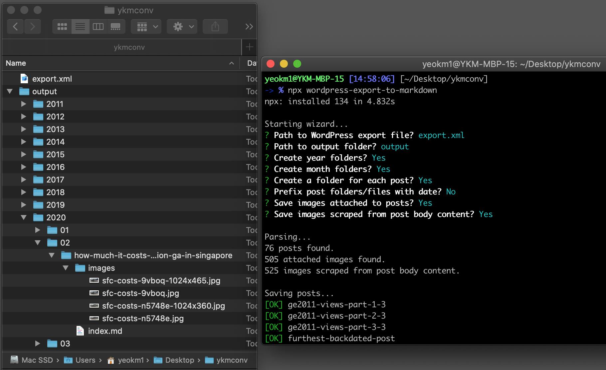
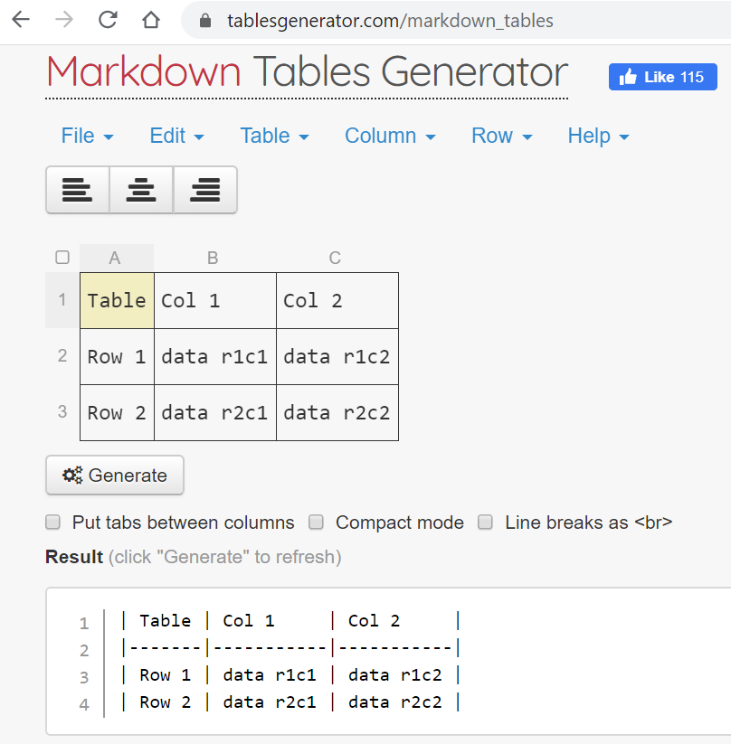
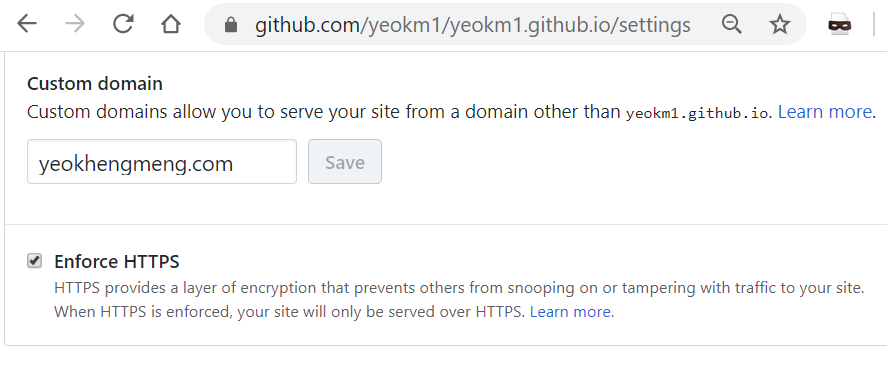

Migrating my blog to a static site has been on a backburner for several months for me. Given the recent circuit-breaker or “soft-lockdown” in Singapore, I found the time to finally take the plunge.
I took the opportunity to change the theme during the migration.
I initially started with WordPress* as it was a common Content Management System (CMS) then (and still today) and it was easy to use. I also wanted to self-host as I wanted full control of my content. So WordPress.org was my choice and it came with lots of setup documentation too.
* I mean the self-hosted WordPress.org and not the hosting service WordPress.com. Read this link to know the difference.
Markdown-driven static-site generators came to my attention some years back touting benefits like improved server performance and better site security. I could also choose to host my site on Github Pages (like now) which is FREE and low-maintenance thus saving me money which otherwise used to go to my cloud provider.
However migrating a site has its challenges as the number of blog posts I have is numerous and I know from experience automated conversion tools are never 100% accurate. Significant time is needed to inspect and correct every post, setting up a new theme and other administrative tasks.
There are many WordPress to Hugo guides online so instead of reinventing the wheel, let me share my experience and technical pain points that were not fully covered by other guides.
High-level Goals during migration
- All content must be preserved. Not just text and images but external stuff like visitor-generated comments and embedded links like YouTube and Facebook etc too.
- Analytics like Statcounter and Google Analytics
- Permalinks should remain the same as I cannot break other sites that already link to certain posts
- Site Generation should be fast. I chose Hugo over other static site generators as it touts fast rendering speed to facilitate rapid iteration.
Migration steps
With the goals in mind, I broke down the procedures I took into the following steps which required some customised conversion steps on my part.
- WordPress Preparation
- Automated conversion of WordPress export file to markdown format
- Correct conversion inconsistencies
- Facebook comments
- Set up Statcounter Analytics
- Maintain Permalinks
- Point the domain to Github
Step 1: WordPress Preparation
Some work has to be done on the WordPress site to make it easier to transfer things across.
Download WordPress Extended RSS XML
This format, which we call WordPress eXtended RSS or WXR, will contain your posts, pages, comments, custom fields, categories, and tags.
Dashboard -> Tools -> Export
This XML file contains information that most automated converters will use to do the conversion to markdown.
Convert WordPress comments to Disqus
Initially, I used the default WordPress commenting system. This function is not available on a static site as it does not have a database which dynamic websites have. Many static sites therefore use an external commenting system like Disqus.
To use Disqus, one method is to install a Disqus Wordpress plugin as suggested by this guide. Let the plugin extract the existing WordPress comments and sync it to Disqus’s servers. After that, use the same Disqus profile for the static site.
I previously used Facebook and Disqus comments systems on my WordPress site to prepare for this eventual conversion.
Step 2: Automated conversion of WordPress export file to markdown format
Converting post by post to markdown manually is too time consuming. Far better to let an automated tool do most of the work then manually convert parts which the converter fail to do properly.
I tried several conversion tools but the one that worked best for me was lonekorean’s wordpress-export-to-markdown.
It allows me to organise my posts into year folders and month subfolders. If there are images associated with each post, they are scraped from the live site and placed in the same folder as the post’s markdown for easier association. If I need to delete or adjust the post for some reason, the images goes together with it.
Step 3. Correct conversion inconsistencies
No automated conversion tool is perfect. In this case, I had to inspect and correct almost all the markdown files due to conversion that did not fit my requirements.
Markdown Tables
I used tables like the following to display data in my Wordpress blog.
| Table | Col 1 | Col 2 |
|---|---|---|
| Row 1 | data r1c1 | data r1c2 |
| Row 2 | data r2c1 | data r2c2 |
The converter generates the following unusable output.
Table
Col 1
Col 2
Row 1
data r1c1
data r1c2
Row 2
data r2c1
data r2c2
To resolve that, I just copy and pasted the data from my WordPress site into this markdown table generator and used its output.
Categories
Categories did not seem to be imported so I had to add them manually to every post in the front matter.
---
title: Migrating my blog from Wordpress to Hugo
author: Yeo Kheng Meng
date: 2020-04-11
categories: ["admin"]
---
Code snippets
Occasionally I want to display code with syntax colouring like the following:
long long getCurrentNanoseconds(){
struct timespec spec;
clock_gettime(CLOCK_MONOTONIC, &spec);
long long specTime = (spec.tv_sec * 1E9) + spec.tvnsec;
return specTime;
}
After WordPress conversion
WordPress uses the [code] tag which the converter does not recognise hence the following is shown:
\[code language="cpp"\] long long getCurrentNanoseconds(){ struct timespec spec; clock\_gettime(CLOCK\_MONOTONIC, &spec); long long specTime = (spec.tv\_sec \* 1E9) + spec.tv\_nsec; return specTime; } \[/code\]
I had to manually change it to the hugo method such as:
``` cpp
long long getCurrentNanoseconds(){
struct timespec spec;
clock_gettime(CLOCK_MONOTONIC, &spec);
long long specTime = (spec.tv_sec * 1E9) + spec.tvnsec;
return specTime;
}
```
Image links
Every embedded image link generated had a problem with the link still pointing to the original WordPress path. This required manual correction as follows.
[](http://yeokhengmeng.com/wp-content/uploads/2020/02/sfc-costs-n5748e.jpg)
Convert to >>>>
[](images/sfc-costs-n5748e.jpg)
The original image path has a resolution suffix as WordPress displays a lower-resolution image for the photo in the main post and hyperlinked to the original high-res shot. I kept this arrangement for my historical posts.
Shortcode image
Markdown tends to display an image to its maximum size up to the entire width of the display area which overblows up the image size. Therefore we need to reduce the displayed image size.
Typically we can use this HTML tag <img src="" width="xxx" > to dynamically resize but Hugo does not allow embedding HTML in markdown. Instead, we can use this feature called shortcodes as a shortcut to call custom HTML code.
Inside layouts/shortcodes/imgdisplay.html
<a href="{{.Get "src" }}"><img src="{{.Get "src" }}" width="{{.Get "width" }}"></a>
When we want to display the image, we call our shortcode.
{{< imgdisplay src="images/sfc-costs-n5748e.jpg" width="500" >}}
Other Shortcodes
Other embedded links from Youtube, Facebook etc come in Iframes by default which Hugo does not process. Therefore some manual conversion to shortcode is required.
YouTube shortcode is supported natively just by doing the following with the video ID but requires manual conversion from WordPress exported IFrame.
{{< youtube 3SLOgQXbR0o >}}
Facebook embed was slightly more troublesome as I have to create a custom shortcode like the following:
<iframe src="{{ .Get "src" }}" width="{{ .Get "width" }}" height="{{ .Get "height" }}" style="border:none;overflow:hidden" scrolling="no" frameborder="0" allowTransparency="true" allow="encrypted-media"></iframe>
To display my Facebook embed, I just call my shortcode with the source and dimensions.
{{< facebook src="https://www.facebook.com/plugins/post.php?href=https%3A%2F%2Fwww.facebook.com%2Fworkersparty%2Fposts%2F3352194541463772&width=600" width=600 height=650 >}}
Step 4: Facebook comments
Disqus comments are supported by default in Hugo. However I still wish to support the Facebook commenting system as some people prefer that.
To add custom HTML code, Hugo allows one to override the HTML file of an existing theme. For example, my theme stores the comments HTML within this path layouts/_default/comments.html in its folder. So I’ll create another file in the same path with the following. I add the .Permalink key to autofill in the site URL for Facebook to associate the correct comments.
<!-- Copy paste existing Disqus code above so FB comments will appear below Disqus-->
<div id="fb-root"></div>
<script async defer crossorigin="anonymous" src="https://connect.facebook.net/en_US/sdk.js#xfbml=1&version=v6.0"></script>
<div class="fb-comments" data-href="{{ .Permalink }}" data-width="100%" data-numposts="5"></div>
Step 5: Set up Statcounter Analytics
Google Analytics is supported by default but I personally prefer Statcounter as it has better presentation tools of live activity in my opinion.
To support this, we use the same trick as the Facebook comments and override the relevant HTML file which for my theme is located in layouts/partials/scripts.html.
<!-- Default Statcounter code for Personal Site
http://yeokhengmeng.com -->
...
<script type="text/javascript"
src="https://www.statcounter.com/counter/counter.js"
async></script>
...
<!-- End of Statcounter Code -->
<!-- Copy paste existing scripts code below -->
...
Step 6: Maintain Permalinks
Maintaining the Permalinks ensure that external links to my site does not break. Both Facebook and Disqus also associate the comments based on the site URLs.
My previous WordPress site used this format http://yeokhengmeng.com/YYYY/MM/post-title/ to structure the permalinks.
To retain this format, it was actually quite simple to add the following into config.toml which is Hugo’s site configuration file.
[permalinks]
post = "/:year/:month/:title/"
If the title is not the URL, we can add the following in the front matter to override the title as the URL.
url: "2018/01/make-the-486-great-again"
Step 7. Point the domain to Github
Once everything is complete, it’s time to make the leap! Add the domain name to the *.github.io repo settings page like as follows.
My domain name provider is Namecheap and they provided a nice guide on how to configure a domain to use Github’s DNS.
It could take about half hour for the DNS to take effect so sit tight and wait!
Conclusion
Migrating this blog was an experience but it was worth it after months of procrastination. My resource-hungry and maintenance-heavy WordPress blog is now decommissioned after many years of service. I also have HTTPS now as Github Pages supports it easily. Before that, adding HTTPS support to a self-hosted WordPress is troublesome.
I’m not a web developer but going through all this has let me gained that slightly bit more knowledge over my non-existent web knowledge.
If you run into similar pain points as I did, hopefully this blog post works for you!
To take a look at the source files, you can head to the following repos:
Hugo Source files: https://github.com/yeokm1/yeokm1.github.io-hugo
Generated frontend: https://github.com/yeokm1/yeokm1.github.io


{kind=link}
{kind=link}
{kind=link}
{kind=link}
{kind=link}
{kind=link}